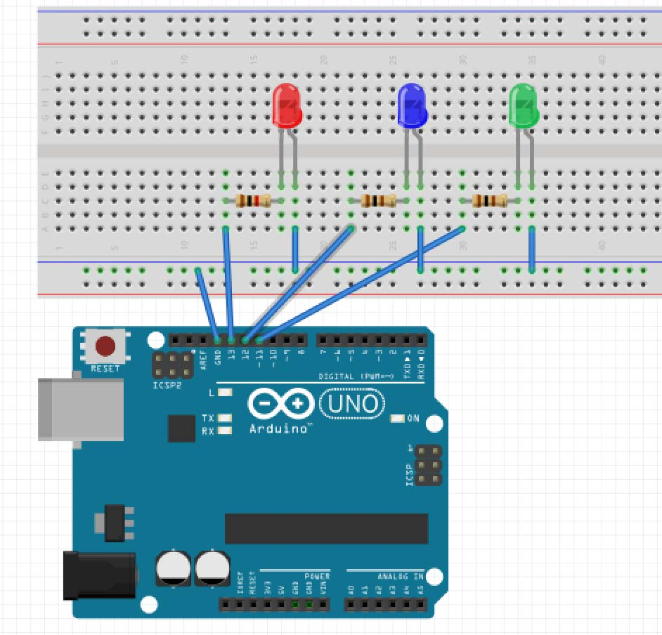
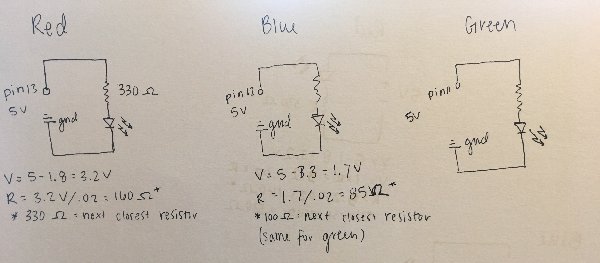
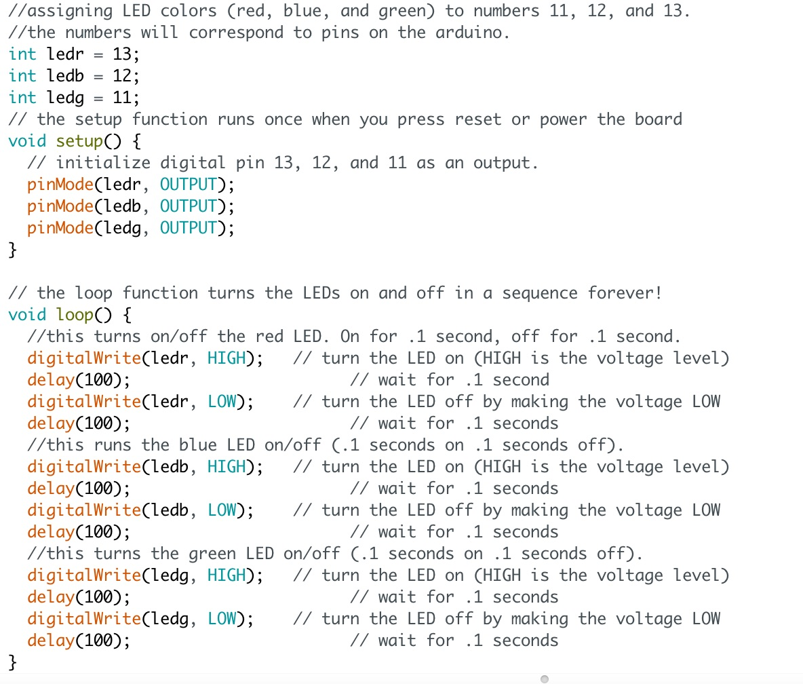

Assigntment 1: Blink!
Circuit

The LED blinking sequence.
Circuit for 3 blinking LEDs. I used pins 11, 12, and 13 for power and connected ground to the negative row on the breadboard. I connected to power for each LED with a red wire connected to a resistor first (330 ohms for red, 100 ohms for blue, and 100 ohms for green), then the resistor to the corresponding LED. I calculated the resistance needed for each LED using the equation V=IxR. Finally, I connected black wires from the negative row on the bread board (ground) to the second pin on each LED.
Schematic
Here is the schematic for each of the LEDs and the calculation for the resistors with 5V of power from the board. I used the target of 20mA and the drop voltage for each light.
Code
Here is the code I used within the Arduino IDE to create the sequence of LED blinks. See comments in the code for a description of each section of code.